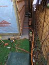

Electrics
Some details on the electrics in the shed - basically build notes.
{kind=link}
{kind=link}

Rough Design Sketch.
Sketch via tinkercad. Two lighting points, two of triple double gang sockets (with built in USB) and a doubel docket to power the telly. Planning to use easybulb.com / limitlessled.com/ / mi-light to control the lights - hence no physical wired lighting switches.
At the moment the limiting factor is the 6A MCB on my house's consumer unit that feeds outside. New plan, use a plug connected to an existing socket, not a fixed circuit under part p.

Run cable
The first step was to drill a hole, in a cavity wall - two brick thickness + air gap. Thanks to Ben for the loan of Drill and drill bit. You not that the hole is downward, to reduce any water inlet. I had some nice orange cable from PVG.
{kind=link}
{kind=link}
{kind=link}
{kind=link}
I used this Great guide and advice from PVG to terminate the SWA .
{kind=link}
I even ran a quick Earth Loop Impedance test, 0.59Ω compared with 0.39Ω - before the extension.
Internal Cabling
Running internal cabling. Inside the timber frame work. As I am installing the cable, without ducting, next to the thermal insulation - I when over spec and used Blue 3183AG 3 Core 2.5mm cable.
First Overhead Light
Using a £3 Bulk Head wall light with a bluetooth controlled LED lamp. See Automation for more details about the lights control.
{kind=link}
{kind=link}
Further sockets, jucntion boxes and light now installed.
{kind=link}
{kind=link}
{kind=link}

Finished
Did a big push and finished the rest of wiring within one evening. What made it so quick and simple were the Wago Connectors - this video: https://www.youtube.com/watch?v=_KhBoxgyXgI explains it well. Throw away your terminal block and use wago connectors.